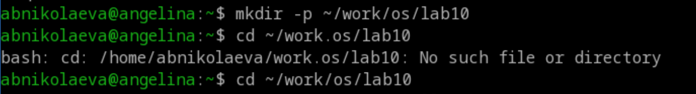
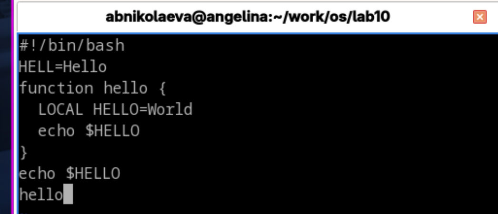
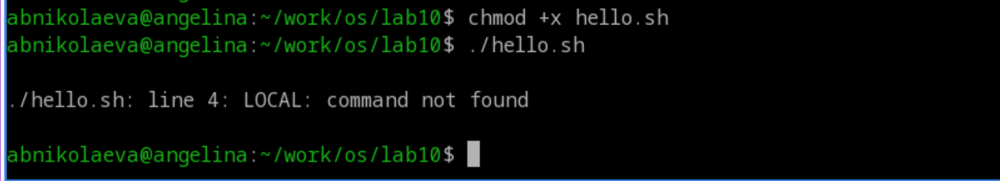
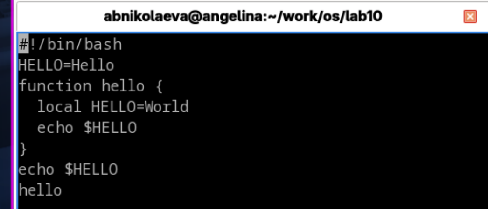
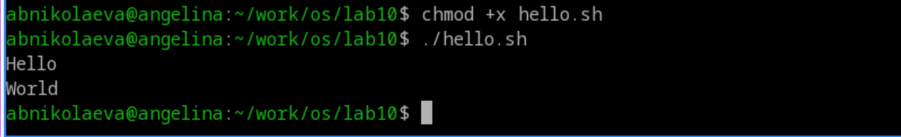

Лабораторная работа №10
Операционные системы
Николаева А. Б.
Российский университет дружбы народов, Москва, Россия
20 июня 2026
Информация
Докладчик
- Николаева Ангелина Борисовна
- Студентка НКАбд-04-25
- Российский университет дружбы народов
- [1032253612@rudn.ru]

Цель работы
- познакомиться с операционной системой Linux
- получить практические навыки работы с редактором vi, установленным по умолчанию практически во всех дистрибутивах
Выполнение лабораторной работы
Создадим каталог с именем ~/work/os/lab10.
Перейдем во вновь созданный каталог.

Вызовем vi и создадим файл hello.sh vi hello.sh
Нажмем клавишу i и введем текст из задания.
Нажмем клавишу Esc для перехода в командный режим после завершения ввода текста.
Нажмем : для перехода в режим последней строки и внизу нашего экрана появится приглашение в виде двоеточия.
- Нажмем w (записать) и q (выйти), а затем нажмем клавишу Enter для сохранения нашего текста и завершения работы.

- Сделаем наш файл исполняемым и попытаемся его исполнить.

Вызовем vi на редактирование файла vi ~/work/os/lab10/hello.sh
Установим курсор в конец слова HELL второй строки.
Перейдем в режим вставки и заменим на HELLO. Нажмем Esc для возврата в командный режим.
Установим курсор на четвертую строку и сотрем слово LOCAL.
Перейдем в режим вставки и наберем следующий текст: local, нажмем Esc для возврата в командный режим.
Установим курсор на последней строке файла. Вставим после неё строку, со- держащую следующий текст: echo $HELLO.
Нажмем Esc для перехода в командный режим.
Удалим последнюю строку.
Введем команду отмены изменений u для отмены последней команды.
- Введем символ : для перехода в режим последней строки. Запишем произведённые изменения и выйдем из vi.


Выводы
В ходе роботы мы познакомились с операционной системой Linux, и получили практические навыки работы с редактором vi, установленным по умолчанию практически во всех дистрибутивах UNIX.